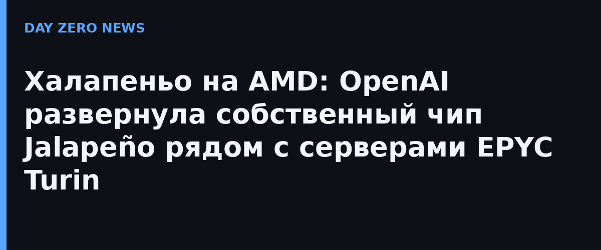

OpenAI впервые публично подтвердила, что её собственный чип для инференса Jalapeño уже развёрнут внутри компании в производственных масштабах. По словам вице-президента и руководителя аппаратного подразделения Ричарда Хо (Richard Ho), ASIC работают в стойках вместе с хост-серверами на AMD EPYC Turin с 1,5 ТБ оперативной памяти на каждую машину. Интервью дал изданию Tom's Hardware.
Выбор хост-процессора Хо назвал «прагматичным»: Turin, по его словам, полностью закрывает потребности проекта Jalapeño, а партнёры OpenAI уже имеют большой опыт работы с этой платформой. Свежий конкурирующий вариант — CPU Nvidia Vera — он назвал «немного отстающим по уровню зрелости». То есть при агрессивных целях по производительности и цене компания выбрала минимизацию рисков и скорость развёртывания, а не максимальные спецификации.
Jalapeño — результат совместной разработки OpenAI и Broadcom, представленный ещё в июне 2026 года и детально показанный в августе на конференции Hot Chips. Чип сделан под инференс больших языковых моделей по нормам TSMC 3 нм; ранее OpenAI заявляла, что по пропускной способности на ватт при работе с DeepSeek R1 он в 1,7 раза превосходит Nvidia GB300. Теперь впервые подтверждён не демо-статус, а реальная эксплуатация.
Сейчас Jalapeño используется только внутри OpenAI — продавать его наружу компания не планирует, хотя Хо не исключил расширения сценариев, «если ресурсов хватит». Для рынка это ещё один сигнал: крупнейшие лаборатории ИИ всё плотнее уходят от полной зависимости от Nvidia, собирая собственные стек-платформы из кастомных ASIC и обычных серверных CPU.
Первоисточник по чипу — официальная страница анонса OpenAI и Broadcom; отдельного анонса именно о развёртывании с Turin у OpenAI нет, это интервью аппаратного руководителя профильной прессе.